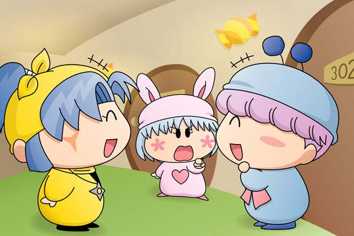
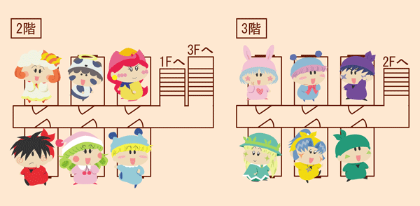

何とか無事にあんみつ島に到着した一行は、クモモの案内のもと、クモモペンションへと歩いていきます。
森を少し抜けると、目新しい建物が少しずつ見えてきました。
ミルモ「おぉ、ここがクモモペンションかぁ。
なかなか立派じゃねぇか」
ムルモ「ほぇ～っ、想像していたより大きいでしゅ～」
リルム「外観もとても美しくてクモモさんの気品が感じられますわ」
パンタ「よかったですっち！
ミルモお兄ちゃんが元気になってくれてうれしいですっち」
ミルモ「わ～っ、パンタ、くっつくんじゃね～っ」
不機嫌になっていたミルモも、何とか機嫌を取り戻してくれたようです。
クモモ「お褒めいただき光栄クモ。
それでは皆さんを中にご案内するクモよ」
クモモが大きな扉を開けると、広いリビングと、そして椅子がたくさんある食卓がみんなの目に映りました。
「おぉ」とため息混じりに驚くみんな。
中でも妖精忍者たちが特に驚いているようです。
サスケ「兄貴～、オイラこんな大きな家に泊まるのは初めてなんだぜ～」
ハンゾー「あそこに大きなテレビがあるのら～」
ヤマネ「迷子になってしまわないか心配でございます」
ヤシチ「お、おまえ達、くれぐれも失礼のないようにするのだぞ」
サスケ「さすが兄貴なんだぜ」
ハンゾー「こんなに広い部屋を見ても落ち着いているなんてすごいのら～」
ヤシチ「ま、まぁな・・・」
どうやらヤシチも広い家には不慣れみたいですね。
クモモ「皆さんお疲れですから、先に皆さんをお部屋にご案内するクモ。
お部屋はシングルルームになっているから、一人一人別のお部屋に
なるクモよ」
アクミ「おっ、気が利くじゃん。
こいつらとずっと一緒だと３日間疲れちまうからな」
アロマ「ちょっと心細いけれど、私も一人の方が落ち着くことが
ありますわ」
アクミ「あたい達って結構気が合うじゃん！？」
アロマ「はい！」

ムルモたちは自分たちが泊まることになる３階へとやってきました。
洋室のお部屋におろおろしているヤマネを見て、すかさずムルモが声をかけます。
ムルモ「ヤマネしゃん、困ったことがあったら
いつでも王室育ちのボクを頼ってくだしゃいね」
ヤマネ「はい、ムルモ殿！」
パピィ「そこ！何いちゃいちゃちているのよ！」
ムルモ「ボクはヤマネしゃんに言っているんでしゅよ。
パピィは黙っていてくだしゃい」
パピィ「そういうあんたも一人じゃ何も出来なくて淋しいんでちょ。
淋しかったらあたちの部屋に遊びに来てもいいのよ」
ムルモ「だ、誰がパピィの部屋に行くんでしゅかっ・・・」
どすん！ どすん！
一方の２階に案内されたミルモたち（ミルモ、ヤシチ、アクミ）は、部屋の中にあるふかふかベッドをトランポリンのようにして遊んでいます。
クモモ「ミルモさんたちを３階じゃなくて２階にしておいて
よかったクモ・・・」
えーっと、しつこく前置きが続きます(^◇^;)。何とかあんみつ島のクモモペンションに到着した一行でしたが、クモモペンションの紹介だけで予想以上に長くなってしまいました。シングルルームの部屋割りは文章のみの説明だと分かりにくいので、以下に図解します（分かりにくい図ですけど）。この部屋割りに何か意味があるのか無いのかは今後のストーリーにて…。

実は私、ペンションには泊まったことがなくて、舞台はホテルみたいになってしまいました。実際のホテルは個室ではなくて、大人数で泊まれるような部屋がメインなのでしょうか？
(2007/11/6)